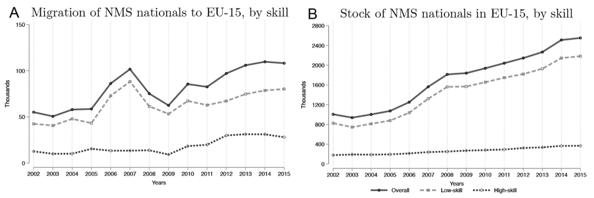

市场一体化会带来什么？
2022-09-06
Paper: Caliendo, Lorenzo, Parro, F., Opromolla, L. D., & Sforza, A. (2021). Goods and Factor Market Integration: A Quantitative Assessment of the EU Enlargement. Journal of Political Economy, 129(12), 3491–3545.
一、引言
在过去的几个世纪中，无论是国与国之间的市场还是一国内部的市场，都经历了大规模的融合与共同发展。在本推文介绍的原文中，作者用structural-form的研究范式分析了2004年欧盟扩容所产生的移民效应、就业效应、福利效应及其对不同类型群体的再分配效应，从而为我们了解市场一体化的经济后果提供了经验证据。
本推文的第二节将简要介绍欧盟扩容的事件背景。从第三节开始进入结构模型的部分。第三节将向读者介绍原文的理论模型，受限于篇幅，推文中无法展示详细的推导过程，而重在展示模型设定的全貌，以及借助Hat Algebra方法对反事实估计的简化。第四节向读者介绍原文如何估计理论模型中需要的重要变量与参数，其中利用不同国家调整移民政策的不同时间来估计各国移民成本大小的思路非常精彩。第五节介绍原文进行反事实分析得到的结果，从而了解欧盟扩容所推动的市场一体化的各种经济效应。第六节是全文的总结以及推文作者的一些思考。
二、事件背景
2004年5月1日，10个国家加入欧盟，成员国由原来的15个增加至25个。在这一节中，推文将对这一事件背景进行简要的介绍。为了方便，作者在原文中使用EU-15指代原来的15个国家，用NMS(New Member State)指代新加入的10个国家。EU-15和NMS之间的国家规模、经济发展情况、工人技术水平等存在很大的差异性，总体上说，EU-15是相对更加发达的国家，NMS中低技术工人的占比要明显更高。
若一个国家成为欧盟的成员国，这意味着该国与其他欧盟成员国之间实现货物的自由流动和国民的自由流动。欧盟法律保证了欧盟成员国的国民在迁移到另一欧盟成员国时，能够获得在当地就业和居住的权力，且不允许存在任何基于国别的劳动力歧视。在欧盟扩容后的7年间，EU-15逐步放松了对NMS的移民约束，这一进程在不同国家间也存在差异。比如，2004年，英国、爱尔兰和瑞典率先向NMS开放边界；随后，2006年，意大利、希腊、葡萄牙和西班牙取消了对NMS的移民限制……为了说明移民政策的变化过程，作者在附录A.1中的Figure A.1绘制了四个重要时段内各国间移民约束的存在情况，希望了解细节的读者请自行查阅。相比起移民政策，贸易政策的调整相对容易。从2004年开始，EU-15和NMS之间的关税降低至0。
原文所使用的数据主要来源之一是European Labor Force Survey (EU-LFS)，由于数据本身的限制，作者使用了其中17个国家的数据(10个属于EU-15，7个属于NMS，17个国家涵盖了欧盟91%的人口)。在正式进行理论模型的构建之前，作者利用EU-LFS的数据对移民与就业的情况进行了一些初步的统计分析。
首先，作者绘制了EU-15中来自NMS的高技能移民与低技能移民的流量与存量变化。可以发现，移民主要是低技能工人，随着时间的推移，EU-15中的NMS移民存量不断增加，但其趋势在某一些年份后会发生变化。

随后，作者以英国为例，构建了以下的回归方程考察英国放开移民限制后其移民数量的变化： $$\ln{F_{n,t}^{i,UK}}=\lambda_{i,t}+\alpha_{NMS}+\beta_{03}\mathbb{I}(n=NMS;t{\geq}2003)+\beta_{04}\mathbb{I}(n=NMS;t{\geq}2004)+\varepsilon_{n,t}^{i}$$ 其中，$F_{n,t}^{i,UK}$代表第$t$期向英国迁移的移民流量；$\mathbb{I}(\cdot)$代表对括号内的条件进行判断，满足则取1，否则为0。Table 1展示了作者的估计结果，由于英国在2004年放开移民限制，因此对$\beta_{04}$的估计结果为正且显著表明英国放开移民限制后，国内出现了更大的移民流量。当然，这里不可否认地存在内生性，作者也并不认为这一估计结果具有明确的因果含义。对于欧盟扩容的经济后果的准确识别，我们留待后续structural-form的反事实分析。
三、理论模型
为了能够对欧盟一体化的效应进行更加全面的分析，作者采取了structural-form的经验研究思路，在EK模型的基础上引入了动态分析与劳动力流动，从而建立了一个动态的空间一般均衡模型。EK模型是量化贸易模型中重要的理论基础之一，限于推文篇幅，推文无法对EK模型及其推论进行详细地介绍，故本推文对不熟悉EK模型的读者而言可能不太友好。为此，推文最后附上了一个介绍EK模型的理论背景与部分细节推导的notes(少量内容有待更新)；另外也鼓励读者详细阅读Eaton and Kortum (2002)的原文。
本文的动态空间一般均衡模型的基础设定如下。假设存在$N$个国家，用角标$i$和$j$区分不同国家，由于存在商品和劳动力的流动，$i$表示出口国/流动的起点，$j$表示进口国/流动的终点。设定商品是连续的，每一个variety用$z^i$表示，每个国家均可生产。每个国家均存在高技能与低技能两类劳动力，技能水平通过角标$s (s \in { h, l })$进行区分。商品市场和劳动力市场是完全竞争的，劳动者可以选择工作或不工作，由于模型属于动态模型，劳动者的就业决策可能发生变化，作者用角标$\ell$代表今天，$o$代表明天(预期)，$\ell$和$o$的取值为$e$(就业)或$ne$(失业)。此外，商品的流动面临运输成本与关税，劳动力流动面临移民成本。
(一)家庭部门
家庭部门进行消费决策与劳动力供给决策以最大化效用。对于一个国籍在$n$国、身处$i$国、技能水平为$s$、劳动力状态为$\ell$的劳动者而言，其在$t$时期的效用为： $$ v_{n,s,t}^{i\ell}=\ln{C^{i\ell}_{s,t}}+{\rm max}_{\{j,o\}_{j=1,o=e,ne}^{N}}\left\{{{\beta}E\left[{v_{n,s,t+1}^{jo}}\right]-m_{n,s,t}^{i\ell,jo}+\nu\epsilon_{n,s,t}^{jo}}\right\} $$ 其中第一项为今天($\ell$)由消费带来的效用，如果劳动者为就业状态，则其消费$C_{s,t}^{i\ell}$等于其实际工资收入$w_{s,t}^i / P_t^i$；如果处于失业状态，则假定其消费实际价值为$b_i$的家庭内部生产所得。第二项为经过最优化决策后明天($o$)的预期效用，大括号内$\beta$为贴现因子，$m_{n,s,t}^{i\ell ,jo}$代表该劳动者从$i$国迁移到$j$国需要付出的移民成本。$\epsilon_{n,s,t}^{jo}$是一个随机变量，用于体现劳动者偏好的异质性(与EK模型中体现技术异质性、服从Fréchet分布的随机变量的作用是类似的)，作者假定其服从均值为0、形状参数为$\nu$的Gumbel分布(i.i.d.)。作者将移民成本进一步分解成非政策成分与政策成分： $$\begin{aligned} m_{n,s,t}^{i\ell,jo} &= \widetilde{m}_{n,s,t}^{i\ell,jo} + mpol_{n,t}^{i,j} \\ &= \bar{m}^{i\ell}_{n,s,t} + \bar{m}^{jo}_{n,s,t}+\bar{m}^{i\ell,jo}_{n,s,t}+mpol_{n,t}^{i,j} \end{aligned}$$ 前三项是非政策成本(在calibration中可通过交互固定效应吸收)，最后一项是政策成本，当欧盟成员国扩容时，EU-15与NMS之间的$mpol_{n,t}^{i,j}$将减少，只不过我们无法像关税减免一样直接得到其减少的程度，需要进行估计(详见推文后文)。
作者定义$V_{n,s,t}^{i\ell}\equiv E\left[{v_{n,s,t}^{i\ell}}\right]$，根据Gumbel分布的性质，可得：$$V_{n,s,t}^{i\ell}=\ln{C_{s,t}^{i\ell}}+\nu\ln\left({\sum\limits_{j=1}^{N}\sum\limits_{o=e,ne}{\exp{\left(\beta V_{n,s,t+1}^{jo}-m_{n,s,t}^{i\ell,jo}\right)^{1/\nu} }}}\right) \tag{1}$$同时，还可以求得对于今天位于$i$国、就业状态为$\ell$的劳动者而言，其明天的最优策略是迁移至$j$国(如果$i=j$则意味着不迁移)、就业状态为$o$的概率(利用Gumbel分布的概率分布函数就能求得)：$$\mu_{n,s,t}^{i\ell,jo}=\frac{\exp{\left(\beta V_{n,s,t+1}^{jo}-m_{n,s,t}^{i\ell,jo}\right)^{1/\nu}}}{\sum_{k=1}^{N}\sum_{a=e,ne}{\exp{\left(\beta V_{n,s,t+1}^{ka}-m_{n,s,t}^{i\ell,ka}\right)^{1/\nu}}}} \tag{2}$$在大样本情形下，一国的劳动者的偏好分布会收敛于我们假定的个体偏好所服从的分布，因此$\mu_{n,s,t}^{i\ell,jo}$也反映了实际的迁移比例(这与EK刻画贸易份额的思路也是一致的)。根据这一比例，可以求得每个国家在每一时期的高技能劳动力数量与低技能劳动力数量，这就与后续讨论生产联系到了一起：$$L_{s,t+1}^{ie}=\sum\limits_{n=1}^{N}\sum\limits^{N}_{j=1}\sum\limits_{\ell=e,ne}{\mu_{n,s,t}^{j\ell,ie}L_{n,s,t}^{j\ell}} \tag{3}$$
(二)生产部门
对于生产部门的刻画，作者主要是延续了EK的各种经典设定。生产函数是C-D函数(为了更加清晰，推文中对原文公式进行了变形)，其中$z^i$代表连续商品： $$q_t^i(z^i)=z^i A_t^i\left[\left((\delta_{h,t}^i)^{\frac{1}{\rho}}(L^{ie}_{h,t}(z^i))^{\frac{\rho-1}{\rho}}+(\delta_{l,t}^i)^{\frac{1}{\rho}}(L^{ie}_{l,t}(z^i))^{\frac{\rho-1}{\rho}})\right)^{\frac{\rho}{\rho-1}}\right]^{1-\gamma^i}(H^i(z^i))^{\gamma^i} \tag{4}$$ 其中$L{h,t}^{ie}$和$L_{l,t}^{ie}$是两种技能水平的劳动力投入，$H^i(z^i)$是固定要素投入(土地、建筑)，设定其租金为$r_t^i$。
作者在原文中混用了$z^i$这一符号，在生产函数等号右侧，$z^i$同时是一个随机变量，用于体现技术的异质性，服从Fréchet分布，均值为1。为了体现规模经济效应，作者设定$A_t^i=\phi_t^i L_t^i$，即随着一国总人口的增加，生产效率会更高。因此，$z^iA_t^i$两者构成了生产函数的TFP部分，这依然是一个服从Fréchet分布的随机变量，设定其规模参数为$A_t^i$，形状参数为$\theta$(同时也是trade elasticity)。
在单期内，一国的总人数是固定的，故TFP是确定的；由于C-D函数是位似的且规模报酬不变，要素投入的比例是固定的，因此可以求得单位投入束的成本：$$x_t^i \equiv \zeta^i\left( \sum_{s=h,l}\delta_{s,t}^i \left( w_{s,t}^i \right)^{1-\rho} \right)^{(1-\gamma^i)/(1-\rho)}\left( r_t^i \right)^{\gamma^i} \tag{5}$$其中$\zeta^i$是一个常数，在后续Hat Algebra中会消除，故不重要。
由于商品市场是完全竞争的，商品的国内价格等于其生产成本。然而，商品在贸易过程中存在贸易成本，一方面是运输中的损耗，通过冰山成本$d_t^{i,j} \geq 1$来刻画；另一方面是关税，设定税率为$\tau_t^{i,j}$。因此总的贸易成本为$\kappa_t^{i.j} = (1+\tau_t^{i,j})d_t^{i,j}$。如果国内价格为$p^{i,i}_t(z^i)$，则本国商品在运输到$j$国后，价格为$p_t^{i,j}(z^i) = p_t^{i,i}(z^i)\kappa_t^{i,j}$.
根据EK模型的性质(请读者阅读EK原文Section 2.2的性质(a)与性质(c))，可以得到$i$国对$j$国的贸易份额$\pi_t^{i,j}$(即国$i$的商品卖到$j$国的价格在所有国家中最低的概率)以及$i$国的价格指数$P_t^i$：$$\pi_{t}^{i,j}=\frac{A_t^j(\kappa_t^{i,j}x_t^j)^{-\theta}}{\sum_{k=1}^N A_t^k(\kappa_t^{i,k}x_t^k)^{-\theta}} \tag{6}$$$$P_t^i=\left(\sum\limits_{j=1}^{N} A_t^j(\kappa_t^{i,j}x_{t}^j)^{-\theta}\right)^{-1/\theta} \tag{7}$$
(三)市场出清
商品市场出清条件如式(8)，代表一国的总支出等于其劳动收入、固定要素回报与关税： $$X_i=\sum_{n=1}^N \sum_{s=h,l} w^i_{s,t}L^{ie}_{n,s,t} + \iota^i \chi_t + T^i_t, \ \text{for all} \ i \tag{8}$$ 等式右边第一项是$i$国的总工资收入，等式右边第二项中$\chi_t$代表所有国家的固定要素总回报(global portfolio)，$\iota_i$代表$i$国的固定要素收入在其中的比例，第三项是关税收入(原文此处有typo，推文中已修正)： $$T_t^i = \tau_i^{i,j} X_t^i\frac{\pi_t^{i,j}}{1+\tau_t^{i,j}}$$ 劳动力市场出清条件如式(9)，代表劳动者的工资收入等于生产中需要的劳动力成本： $$w^i_{s,t}L^{ie}_{s,t}=\xi^i_{s,t}(1-\gamma^i)\sum_{j=1}^N \frac{\pi_t^{j,i}}{(1+\tau_t^{j,i})}X^j_t, \ \text{for all} \ i \ \text{and} \ s. \tag{9}$$ 等号右边、求和符号之前的部分是某种技术水平工人在C-D生产函数中的份额，求和符号及以后的部分为$i$国的总产出，其乘积即为生产中的劳动力成本。
(四)均衡
在讨论均衡前，作者先对前文理论模型部分涉及的参数和变量进行了分类：
- 整个经济模型的基础性变量或参数：冰山成本、非政策的移民成本、规模经济效应参数、生产技术对不同技能劳动力的需求参数、固定资本存量、失业者的家庭内部生产所得 $$\Theta_t\equiv\left\{d_t^{i,j}, \widetilde{m}^{il,jo}_{n,h,t}, \widetilde{m}^{il,jo}_{n,l,t}, \Phi_t^i, \delta^{i}_{h,t}, \delta^{i}_{l,t}, H^i, b^i\right\}^{N,N,N}_{n=1;i=1;j=1;\ell,o=e,ne}$$
- 体现经济政策的变量：关税、政策性移民成本 $$\Upsilon_t\equiv\left\{\tau_t^{i,j}, mpol^{i,j}_{n,t}\right\}^{N,N,N}_{n=1;i=1;j=1}$$
- 体现经济状况的变量：劳动力在各国的分布 $$L_t\equiv\left\{L^{i\ell}_{n,h,t}, L^{i\ell}_{n,l,t}\right\}^{N,N}_{n=1;i=1;\ell=e,ne}$$
在完成对变量和参数的分类之后，可以给出静态均衡与动态均衡的定义.
- 静态均衡(Definition 1.)：在某一期中，给定$(L_t, \Theta_t, \Upsilon_t)$，模型的均衡是能够使上述均衡条件满足的一组要素价格$\{w^i_{h,t}, w^i_{l,t},r_t^i\}$。
- 动态均衡(Definition 2.)：给定一个初始的劳动力分布$L_0$，以及基础性变量或参数的序列$\left\{\Theta_t\right\}_{t=0}^{\infty}$和经济政策变量的序列$\left\{\Upsilon _t\right\}_{t=0}^{\infty}$，模型的均衡是满足家庭的动态最优化、上述所有均衡条件以及每一期的静态均衡的一组变量的序列： $$\left\{\left\{L^{i\ell}_{n,s,t}, \mu^{i\ell,jo}_{n,s,t}, V_{n,s,t}^{i\ell}, \omega_{s,t}^{i}(L_t, \Theta_t, \Upsilon_t)\right\}^{N,N,N}_{n=1;i=1;j=1;\ell,o=e,ne;s=h,l}\right\}^{\infty}_{t=0}$$ 回顾一下，这一动态均衡解中，$L$体现了人口在各国的分布，$\mu$是人口的迁移份额，$V$是期望效用，$\omega = w / P$是实际工资。
(五)求解政策变化的影响
在分析政策变化的影响时，我们不太可能也并不必要将所有的变量或参数都估计出来，因为我们关注的是政策导致的变化量，而不是政策前后的绝对量。对此，量化贸易模型中常用的方法是精确帽代数(Exact Hat Algebra)，其思路为：将我们关心的变量$x$与该变量在某一反事实均衡下的结果$x'$相除，定义$\hat{x} \equiv x'/x$并将估计$\hat{x}$作为主要目标；由于在相除过程中能消去很多其他变量或参数，因此减少了反事实分析的难度。这一方法由Dekle, Eaton, and Kortum (2008)发扬光大，有兴趣的读者可以阅读原文。由于原文涉及的是动态模型，因此作者使用了动态帽代数(Dynamic Hat Algebra, DHA)的方法，方法的思路是相似的。
原文意在考察欧洲一体化导致的国家间贸易政策和移民政策变化所带来的影响，因此经验分析建立在对关税大小和移民成本大小的反事实模拟上。首先定义在经济政策序列$\left\{{y_t}\right\}_{t=0}^\infty$下，我们关心的变量$y$的动态均衡序列是$\left\{{y_t}\right\}_{t=0}^\infty$；而在另一个反事实的经济政策序列$\left\{{{\Upsilon}'_t}\right\}_{t=0}^\infty$下，$y$的动态均衡序列是$\left\{{y'_t}\right\}_{t=0}^\infty$。然后定义$\dot{y}_{t+1} \equiv y_{t+1} / y_t$以及$\hat{y}_{t+1}\equiv\dot{y}'_{t+1}/\dot{y}_{t+1}$，可以推导出(推导的细节请读者参考Caliendo, Dvorkin, and Parro (2019))： $$\widehat{u}^{il}_{n,s,t}=\widehat{C}^{il}_{s,t}\left(\sum_{j=1}^{N}\sum_{o=e,ne}{{\mu'}^{il,jo}_{n,s,t-1}\dot{\mu}^{il,jo}_{n,s,t}(\widehat{mpol}_{n,t}^{i,j})^{-\frac{1}{\nu}}(\hat{u}_{n,s,t+1}^{jo})^{\frac{\beta}{\nu}}}\right)^{\nu} \tag{10}$$ $$\mu'^{i\ell,jo}_{n,s,t}=\frac{\hat{\mu}^{i\ell,jo}_{n,s,t-1}\dot{\mu}_{n,s,t}^{i\ell,jo}\left( \widehat{mpol}_{n,t}^{i,j} \right)^{-\frac{1}{\nu}} \left( \hat{u}^{jo}_{n,s,t+1} \right)^\frac{\beta}{\nu}}{\sum_{k=1}^{N}\sum_{a=e,ne} \hat{\mu}^{i\ell,ka}_{n,s,t-1}\dot{\mu}_{n,s,t}^{i\ell,ka}\left( \widehat{mpol}_{n,t}^{i,k} \right)^{-\frac{1}{\nu}} \left( \hat{u}^{ka}_{n,s,t+1} \right)^\frac{\beta}{\nu} \tag{11}}$$ $$L'^{io}_{n,s,t+1}=\sum\limits_{j=1}^{N} \sum\limits_{\ell=e,ne} \mu'^{j\ell,io}_{n,s,t} L'^{j\ell}_{n,s,t} \tag{12}$$ 其中$\widehat{mpol}_{n,t}^{i,j} \equiv \exp({mpol'}_{n,t+1}^{i,j} - {mpol'}_{n,t}^{i,j}) / \exp({mpol}_{n,t+1}^{i,j} - {mpol}_{n,t}^{i,j})$以及$\hat{u}^{i\ell,jo}_{n,s,t-1} \equiv \exp({V'}_{n,s,t+1}^{i\ell} - {V'}_{n,s,t}^{i\ell}) / \exp({V}_{n,s,t+1}^{i\ell} - {V}_{n,s,t}^{i\ell})$。
式(10)至(12)意味着，只要给定一个作为基准的经济状况序列$\{{L_t, \mu_t, \pi_t, X_t}\}_{t=0}^{\infty}$，一些重要的参数$(\nu, \theta, \beta, \rho)$取值，以及一个反事实的政策变化$\{\hat{\Upsilon}_t\}_{t=0}^\infty$，我们就可以直接在基准序列的基础上得到居民的福利变化$\widehat{u}^{il}_{n,s,t}$、反事实下劳动力的迁移情况$\mu'^{i\ell,jo}_{n,s,t}$以及反事实下人口的存量$L'^{io}_{n,s,t+1}$，而无需去估计$\Theta_t$中繁多的基础性变量或参数。
四、数据和估计
根据上一节的理论，为了估计政策对居民福利的影响，我们的只需要三类变量或参数：
- 基准经济序列：分类人口存量序列、移民份额序列、贸易份额序列、总支出序列 $$\left\{L_{n,s,t}^{i\ell}, \mu_{n,s,t}^{i\ell,jo}, \pi_t^{i,j}, X_t^i \right\}^{\infty}_{t=0}$$
- 重要参数：移民弹性、贸易弹性、贴现率、技能工人替代弹性、要素间份额、劳动要素内部份额 $$(\nu, \theta, \beta, \rho, \gamma, \xi)$$
- 反事实政策序列：关税相对变化、移民成本相对变化 $$\{\hat{\Upsilon}\}_{t=0}^{\infty}\equiv\left\{\hat{\tau}_t^{i,j}, \hat{mpol}^{i,j}_{n,t}\right\}^{\infty}_{t=0}$$
其中，分类人口存量序列和移民份额序列可以从EU-LFS调查中直接获得；贸易份额序列、总支出序列、要素间份额、劳动要素内部份额可以由World Input-Output Database求得；作者直接使用了Caliendo and Parro (2015)测算的贸易弹性大小$\theta=4.5$(这篇文章发明了一个利用关税数据测算贸易弹性的巧妙方法，感兴趣的读者也可以阅读)；作者也直接使用了常用的贴现率大小$\beta=0.97$；关税的相对变化可以直接得到(贸易自由化后关税降至0)。至此，需要估计的变量或参数剩下移民成本的相对变化、移民弹性$\nu$和技术工人替代弹性$\rho$。作者通过reduced-form估计为后续structural-form的反事实分析提供了这些重要的变量或参数。
(一)估计移民弹性和技术工人替代弹性
由于推文篇幅有限，有关$\nu$和$\rho$的估计不再详细介绍。对于移民弹性$\nu$，作者拓展了Artuç and McLaren (2015)的估计方法，估计得到$\nu=2$。详情请读者参考原文附录Section E。
对于技术工人替代弹性，根据生产中的成本最小化(要素的边际产品等于要素价格)，易得： $$\frac{w_{h,t}^i}{w_{l,t}^i} = \left( \frac{\delta_{h,t}^i}{\delta_{l,t}^i} \right)^{\frac{1}{\rho}} \left( \frac{L_{h,t}^{ie}(z^i)}{L_{l,t}^{ie}(z^i)} \right)^{-\frac{1}{\rho}}$$ 等号两边同时取对数即可得到如下的线性关系： $$\ln{\frac{w_{h,t}^i}{w_{l,t}^i}}=-\frac{1}{\rho}\ln{\frac{L^{ie}_{h,t}}{L^{ie}_{l,t}}}+\frac{1}{\rho}\ln{\frac{\delta^{ie}_{h,t}}{\delta^{ie}_{l,t}}}$$ 借助$\ln(w_{h,t}^i / w_{l,t}^i)$与$\ln(L^{ie}_{h,t} / L^{ie}_{l,t})$两者的线性回归即可得到对$\rho$的估计，原文中估计得到$\rho=4$。线性回归的具体模型设定以及回归结果请读者参考原文Section Ⅳ.3.D。
(二)估计移民成本的变化
原文中对于移民成本的估计较为复杂，依赖于一定的准实验设计。我们先从一个假想的设定开始：只有3个国家A、B和C，三者之间原来均存在政策导致的移民成本；设想此时国家A和国家B之间推行了移民自由化政策，由政策导致的移民成本降低至0。在前文的理论模型中，原文对移民成本进行了分解，即： $$m_{n,t}^{i,j}= \bar{m}^{i\ell}_{n,s,t} + \bar{m}^{jo}_{n,s,t}+\bar{m}^{i\ell,jo}_{n,s,t}+mpol_{n,t}^{i,j}$$ 同时，在家庭部门最优化决策中，我们得到了移民份额的表达式(即式(2))，由此，在A、B和C的三国情形中，从国A移民至国B的比例为： $$\mu_{n,t}^{A,B}=\frac{\exp{\left( \beta V^{B}_{n,t+1} -m_{n,t}^{A,B} \right)}^{1/\nu}}{\sum_{k=A,B,C}\exp{\left( \beta V^{k}_{n,t+1} -m_{n,t}^{A,k} \right)}^{1/\nu}}$$ 进而可以得到： $$\frac{\mu_{n,t}^{A,B}}{\mu_{n,t}^{A,A}}=\frac{\exp{\left(\beta V_{n,t+1}^{B}-m_{n,t}^{A,B}\right)^{1/\nu}}}{\exp{\left(\beta V_{n,t+1}^{A}-m_{n,t}^{A,A}\right)^{1/\nu}}}$$ 等号左右同时取对数，可以得到： $$\begin{aligned} y^{A,B}_{n,t}-y^{A,A}_{n,t}&=-\frac{1}{\nu}\left(\bar{m}^{A}_{n,t}+\bar{m}^{B}_{n,t}+\bar{m}^{A,B}_{n,t}+mpol_{n,t}^{A,B}-m_{n,t}^{A,A}\right) \\ &+\frac{\beta}{\nu}V_{n,t+1}^{B}-\frac{\beta}{\nu}V_{n,t+1}^{A} \end{aligned} \tag{13}$$ 其中$y^{A,B}_{n,t} \equiv \ln{(\mu_{n,t}^{A,B})}$以及$y^{A,A}_{n,t} \equiv \ln{(\mu_{n,t}^{A,A})}$。同理，可以得到： $$\begin{aligned} y^{A,C}_{n,t}-y^{A,A}_{n,t}&=-\frac{1}{\nu}\left(\bar{m}^{A}_{n,t}+\bar{m}^{C}_{n,t}+\bar{m}^{A,C}_{n,t}+mpol_{n,t}^{A,C}-m_{n,t}^{A,A}\right) \\ &+\frac{\beta}{\nu}V_{n,t+1}^{C}-\frac{\beta}{\nu}V_{n,t+1}^{A} \end{aligned} \tag{14}$$ $$\begin{aligned} y^{C,B}_{n,t}-y^{C,C}_{n,t}&=-\frac{1}{\nu}\left(\bar{m}^{C}_{n,t}+\bar{m}^{B}_{n,t}+\bar{m}^{C,B}_{n,t}+mpol_{n,t}^{C,B}-m_{n,t}^{C,C}\right) \\ &+\frac{\beta}{\nu}V_{n,t+1}^{B}-\frac{\beta}{\nu}V_{n,t+1}^{C} \end{aligned} \tag{15}$$ 在得到(13)、(14)和(15)三个式子之后，作者作出两个识别假定。第一，国A与国B之间的移民政策变化不会导致国A与国C、国B与国C之间的移民政策发生变化，即： $$mpol^{A,C}_{n,post}-mpol^{A,C}_{n,pre}=0$$ $$mpol^{B,C}_{n,post}-mpol^{B,C}_{n,pre}=0$$ 第二，三个国家间非政策性的移民成本的关系不会由于移民政策变化而变化，即： $$\bar{m}_{n,post}^{A,B}-\left( \bar{m}_{n,post}^{A,C}+\bar{m}_{n,post}^{C,B} \right) = \bar{m}_{n,pre}^{A,B}-\left( \bar{m}_{n,pre}^{A,C}+\bar{m}_{n,pre}^{C,B} \right)$$ 定义$Y_{n,t}^{A,B,C}\equiv(y_{n,t}^{A,B}-y_{n,t}^{A,A})-(y_{n,t}^{A,C}-y_{n,t}^{A,A})-(y_{n,t}^{C,B}-y_{n,t}^{C,C})$，如果上述两个识别假定成立，那么可以得到： $$Y_{n,post}^{A,B,C}-Y_{n,pre}^{A,B,C}=-\frac{1}{\nu} \left( mpol_{n,post}^{A,B} - mpol_{n,pre}^{A,B} \right) \tag{16}$$ 由于前面已经估计出了$\nu=2$，通过式(16)可以得到无混淆地求得移民政策变化导致的移民成本下降程度。
原文中，作者将移民政策的变化分为两个阶段。第一阶段从2004年到2007年，这一期间内，英国于2004年率先放开了移民限制，希腊、意大利、西班牙和葡萄牙在2006年放开限制。下面以英国为例介绍原文如何估计移民成本变化。在第一阶段中，英国相当于假想情境中的国家A，NMS相当于国家B，而第一阶段不包含的其他国家相当于国家C。为了借助上述的差分模式来估计英国的移民成本变化，作者构建了如下的估计方程(读者可以类比三重差分法来理解这一估计方程的设计思路)，2004年至2007年变量$post$取1，估计所用数据的时间范围为2002年至2007年： $$\begin{aligned} y_{s,t}^{i,j}-y_{s,t}^{i,i}&=\sum\limits_{s,t}\lambda_{s,t}^{UK} \mathbb{I} (j=UK; s; t) \\ &+ \sum\limits_{s,t}\sum\limits_{origin\in NMS} \alpha_{s,t}^{origin} \mathbb{I} (i=origin\in NMS; s; t) \\ &+ \sum\limits_{s}\sum\limits_{origin\in NMS}\beta_s^{origin, UK} \mathbb{I} (i=origin\in NMS; j=UK; s) \\ &+ \beta^{NMS, UK}_{post} \mathbb{I} (i=origin\in NMS; j=UK; t\in post) +\varepsilon^{ij}_{s,t} \end{aligned}$$ 在这一估计方程中，系数$\beta^{NMS, UK}_{post}$中包含了欧盟扩容后NMS与英国之间移民成本的变化的信息(该系数乘以$-\nu$后即为移民成本的变化量)。使用相同的思路，作者估计了其余国家的情况(差异仅在于作为对照组的国C会依情景而选取不同的国家)。Table 2和Table 3展示了估计的结果。

五、欧盟扩容的经济影响
在完成前文模型构建以及对重要变量与参数的估计和校准之后，这一部分开始借助反事实模拟讨论欧盟扩容的经济影响。
(一)移民效应
为了估计政策的效应，作者构建了一个假设关税和移民成本没有发生变化的反事实情形。操作中只需将现实中移民成本变化与关税变化两者的倒数输入结构模型，即可得到反事实的变量序列。Fig. 4展示了EU-15中来自NMS的移民占比的序列，其中实线代表基准序列(现实情况)，虚线代表反事实序列，两者差异即为市场一体化的效应。可以发现，移民比例是随着时间的推移而不断增加的，表明欧盟扩容对于劳动力的迁移具有长期效应；另外，扩容对于低技能劳动者的迁移产生了更大的影响。
在Table 5中，作者列出了欧盟扩大导致的移民增加在不同时间点上的累计影响。以第(1)列为例，估计结果表明，在欧盟扩大的3年后(2007年)，EU-15中的NMS移民存量增加了0.05个百分点；而在10年后(2015年)累计增加了0.27个百分点。从绝对量上来说，欧盟扩大使得10年内NMS移民存量增加了大约100万。在第(3)列和第(5)列中，作者分别考察了低技能移民与高技能移民的存量增长情况，可以发现低技能移民的存量增加程度明显更大。另外，作者在第(2)列、第(4)列和第(6)列中考察了仅考虑关税政策不变化的反事实情形，因而估计得到的是移民政策变化的单独影响。可以发现，如果仅仅发生移民政策发生变化，移民存量的增加幅度会略微增大，这表明商品的自由贸易能轻微地替代要素的流动。这一结论是符合直觉的，如果商品市场一体化程度更高，则由于劳动力流入造成的人口流入国的贸易条件恶化会更加严重，从而削弱了移民迁移的动机。
作者在Table 6中考察了欧盟扩大对于失业率的影响。结果表明，欧盟扩大使得EU-15的失业率略有下降，但较大幅度地降低了NMS的失业率；高技能工人的失业率略有下降，但低技能工人的失业率有较大幅度的下降。这说明市场的一体化更有助于缓解低技能工人的失业问题。

(二)福利效应
在这一部分，作者讨论了欧盟扩容对于居民福利的影响。Table 7汇报了反事实估计的结果，表格中的数字代表对应群体的福利增加了多少个百分点。第(1)列汇报的是商品市场一体化与要素市场一体化的总效应，第(2)列中的反事实序列仅假设关税政策不发生变化，因此衡量的是关税政策的效应，同理，第(3)列衡量了移民政策的效应。在衡量EU-15总体福利变化时，作者是以EU-15中各个国家的人数作为权重进行加总；NMS和Europe也是这样处理。根据第(1)列的估计结果，欧盟扩大使得整个欧洲变得更好，欧洲的总体福利增加了0.23%。其中，最大的赢家是发展相对落后、作为人口流出地的NMS，其总体福利增加了1.17%。不同技能工人的福利变化也表现出明显的异质性。无论是EU-15还是NMS，都是高技能群体获得了更大的福利提升；甚至在EU-15中，低技能群体的福利提升仅有微不足道的0.02%。
第(2)列和第(3)列的估计结果说明，对于EU-15而言，其福利的增加完全来源于商品市场的一体化使其获得了更便宜的商品，移民自由化使得EU-15国的福利受损，尤其是低技能群体受到了更大程度的福利损失。这是因为更多的低技能工人从NMS移民到了EU-15，使得EU-15中原来的低技能工人面临着更大的竞争。而对于NMS，无论是商品市场的一体化还是劳动力市场的一体化，都对其福利改进有所帮助，商品市场一体化贡献了其中的大约30%，而劳动力市场一体化则贡献了其中的大约68%。
在Fig. 5中，作者在地图上标注了欧盟25个国家各自的福利变化区间，该图再一次清晰地展示了NMS国家从欧盟扩容中获得更大的福利提升。值得一提的是，英国出现了EU-15中较为特殊的情况。尽管其他EU-15国家的福利变化较小，但至少是朝着福利增加的方向变动；然而英国的整体福利是下降的，尤其是英国的低技能工人。这表明，在英国，贸易自由化带来的收益不足以弥补国内低技工人供给大量增加而导致的损失。

作者在原文中还讨论了固定要素所有者以及政府的福利变化。总的来说，欧盟扩容使得NMS的租赁者受到福利损失，EU-15的租赁者得到福利提升。这表明市场一体化导致的再分配，不仅仅发生在不同技能工人之间，还发生在不同生产要素所有者之间。对于政府来说，市场一体化显著削弱了政府获得关税收入的能力，根据作者的估计，在整个欧洲，政府消费的下降相当于约115亿美元，相当于实际GDP的0.53%。
(三)两点额外的讨论
作者在原文中还额外讨论了两种拓展的情形，第一种情形将公共品纳入居民的效用函数，第二种讨论了结论对集聚效应、固定要素所有权结构以及技能替代性的参数设定的稳健性。
由于篇幅，本文不再详细介绍。对于前一种情形，我们提供一些直觉上的理解：如果在效用函数中考虑公共品，欧盟扩大带来的移民增加的趋势并不会发生改变，但是移民的增加幅度会有所下降。这是因为人口流入会导致流入国的公共服务变得“拥挤”、导致流出国的公共服务得以“疏导”，从而产生一种抑制人口流动的力量。对于第二种情形，作者发现对参数的调整并不会导致结论出现明显变化，表明反事实估计的结论稳健。
六、总结
原文的结构与思路充分地体现了如今贸易领域较为前沿的分析范式的精华之所在。作者在EK模型的基础上构建了一个动态的空间一般均衡模型，并利用DHA方法减弱了反事实估计的难度。借助理论模型中推导而出的变量间的内生关系，作者通过reduced-form估计了一些重要参数；并且，作者使用了带有“准实验”色彩的研究设计巧妙地估计出了移民成本的变化。上述工作为接下来的反事实分析做好了准备。通过构建贸易政策与移民政策不发生变化时的反事实序列，作者估计了欧盟扩容引致的商品市场一体化与劳动力市场一体化的经济效应。
欧盟的扩容促进了NMS向EU-15的移民，尤其是低技能劳动者的移民。这一过程中，同时出现商品市场一体化略微缓和了移民的流动。伴随着移民的浪潮，EU-15与NMS的失业率都下降了，尤其是NMS的低技能劳动力的失业率有明显下降。尽管欧盟的扩容使得整个欧洲都获益了，但是最大的赢家是NMS，劳动力市场的一体化对NMS的福利提升尤为明显。EU-15确实从欧盟的扩容中获益(除了英国是EU-15中唯一因欧盟扩容而导致整体福利下降的国家)，但主要是从商品的一体化中获益，由于接纳了许多来自NMS的移民，EU-15的国内劳动力价格受到向下的压力，从而损害了本土劳动者的福利。从技术水平的异质性上看，高技能劳动者获得的福利提升是更大的(或福利损失是更小的)，这也说明市场一体化会导致福利在高低技能劳动者之间重新分配。
虽然本文研究的对象是欧洲，但是对于中国的发展也有重要启发，尤其是在现在着力推动建成全国统一大市场的背景之下。改革开放以来，中国在一步一步的实践探索中推进市场化改革，取得了巨大的改革成就。但由于完备的市场机制仍未建立，国内市场的一体化依然面临着较为严重的制度性约束，且在不同类型的市场中存在明显的异质性：如今我国商品市场的一体化程度已经很高，但是要素市场的一体化程度仍然较低。对于劳动力市场而言，户籍制度是最为基础的制度安排之一，因户籍身份而对流动人口产生的公共服务歧视、工资歧视、住房歧视等，使得许多劳动者无法顺利从发展相对落后的小城市向大城市流动。这一现实情况与欧盟扩容前EU-15与NMS之间的情况是很相似的。因此，欧盟扩容的发展经验启发我们，推进市场一体化是能够在整体上提高全国层面的福利的。但是，我们也必须关注到其中可能产生的再分配效应。欧盟的扩容历程同时推动了商品和要素市场的一体化，贸易带来的好处弥补了大量人口流入对EU-15的居民造成的福利损失。但在我国商品市场已经较为整合的情况之下，这种局面可能难以出现。要素市场一体化的推进，对发展水平较高、吸引大量人口流入的大城市可能更多地是产生负面经济效应，这就不难理解为何要素市场的一体化面临着很大的阻力。为此，改革中需要探索相应的补偿机制，尤其是需要关注人口流入地的本土低技能劳动者的福利。